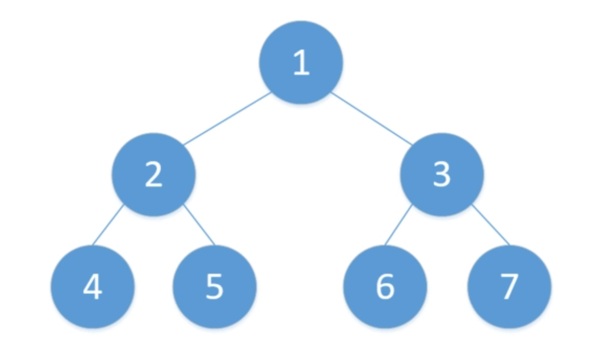
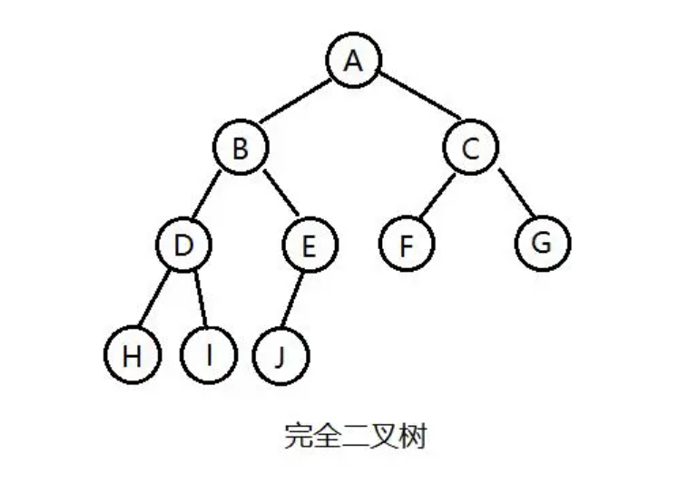
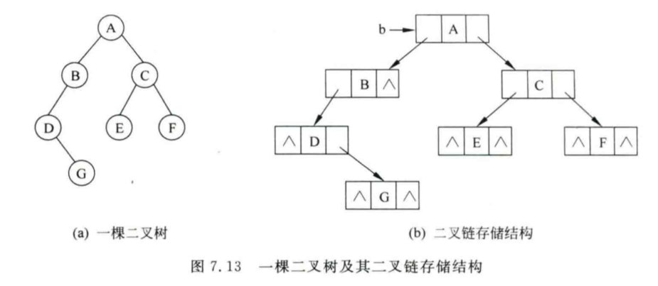
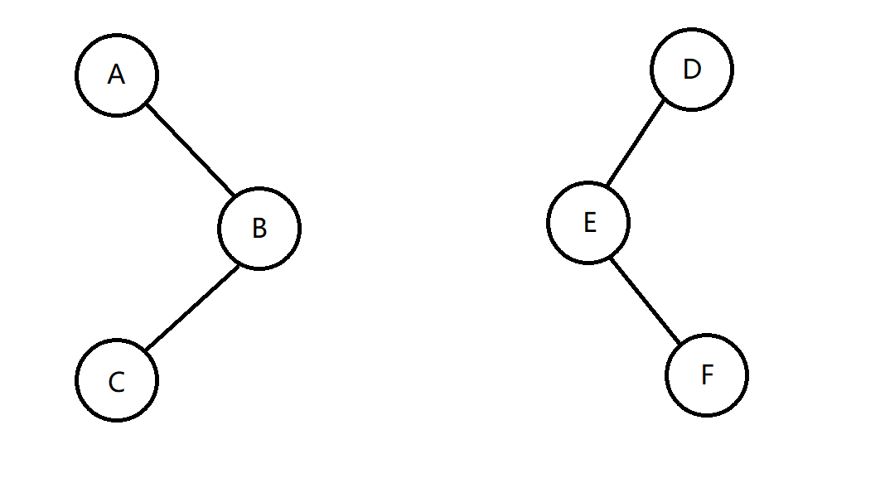
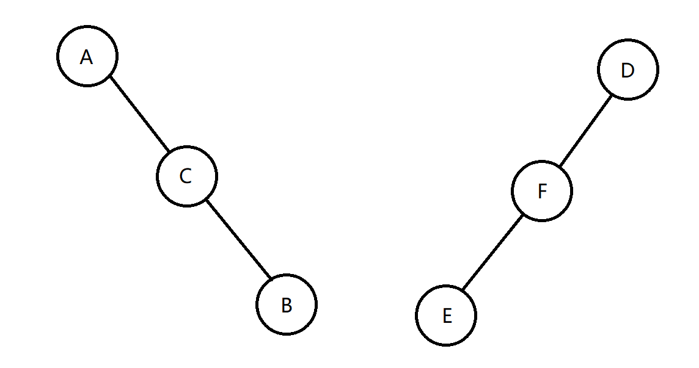

树专题

基本术语
节点的度数(Degree)
一个节点的子节点个数
树的度数
所有节点度数的最大值
叶节点(Leaf)
度数为0的节点
枝干(Branch)
度数不为0的节点
层次(Level)
根节点层次一般为0（有时为1），其余节点的层次为其父节点层次+1
高度(Depth/Height)
树的节点中层次的最大值，所以可能为0
二叉树(Binary Tree)
每个节点的度数最大为2，其子树具有左右子树的次序性，重要性质如下：
- 有n个节点的二叉树有且仅有n-1条边（同样适用于树）
- 第$i$层的节点个数最多为$2^i$，其中树根位于第0层
- 高度为$h$的二叉树最少有$h+1$个节点，最多有$2^{h+1}-1$个节点，其中树根位于第0层
- 如果叶节点的个数为$n_0$，度数为2的节点个数为$n_2$，则有$n_0=n_2+1$（$n=n_0+n_1+n_2=n_1+2*n_2+1[root]$）
- 含有$n$个节点的树的树高最大为$n-1$，最小为$\lceil log_2(n+1)\rceil-1$，其中树根位于第0层
- 如果将二叉树的节点按从上到下，从左到右的顺序标号（从0开始），则第$i$个节点的父节点为$\lfloor(i-1)/2\rfloor$（从1开始标号则为$\lfloor\frac{i}{2}\rfloor$），左子节点为$2* i+1$ ，右子节点为$2 * i+2$（从1开始则分别为$2 * i$和 $2 * i+1$ ）
满二叉树(Full Binary Tree)
每一层的节点全满，即树高为$h$的满二叉树的节点个数一定是$2^{h+1}-1$，其中树根位于第0层

完全二叉树(Complete Binary Tree)
最高层不满但从左到右排布，其他层节点全满

二叉树的存储方法
数组
根据二叉树的第六个特点，使用数组来表示树，其中空缺的节点则在数组中的相应位置留空
| 节点类型 | root | left child | right child | left grandchild | …… |
|---|---|---|---|---|---|
| 节点编号 | 1 | 2 | 3 | 4 | …… |
| 节点取值 | 31 | 23 | 12 | 66 | …… |
链式存储
$Linked~Representation/L-R~Linked~Storage$
| left child | data | right child |
|---|

游标存储
$Cursor$，用列表的方式表示二叉树，其中子节点编号为-1表示对应位置空缺
| 编号 | 数据 | 左子节点编号 | 右子节点编号 |
|---|---|---|---|
| 0 | A | 1 | -1 |
| 1 | B | 2 | 3 |
| 2 | C | -1 | -1 |
| 3 | D | -1 | -1 |
树的遍历方式
层序遍历指的是从上到下，层内从左到右的顺序遍历二叉树的节点
森林的遍历则变为第一棵树的根，第一棵树的子树，其他树的顺序的三种排列
利用后缀表示来构建二叉树
虚拟一个栈，然后依次读入后缀表示，遇到操作数就将其压入栈中，遇到操作符就根据其需要的操作数个数（目数）将操作数从栈中弹出，并作为这个操作符的子节点，然后将整个操作符和操作数组成的表达式压入栈中，视为一个操作数
字符串术语
- 串是指n个字符的有限序列
- 子串是指串中任意一段连续子序列
树的表示方式
广义表表示
用节点上存储的数据加上括号组成具有特定含义的字符串，用于表示一棵树，数据后的括号内的数据表示其子节点的数据，随后递归定义，例如：a(b(f,g),c,d(h,i,j),e)
双亲表示法
使用表格分别表示节点存储的数据和父节点编号，父结点编号为0表示根节点
| 节点编号 | 1 | 2 | 3 | 4 |
|---|---|---|---|---|
| 节点数据 | a | b | f | g |
| 父节点编号 | 0 | 1 | 2 | 2 |
左子女右兄弟表示法
将一个节点的子节点中的一个挂在其左子树上，将该节点的兄弟节点挂在它的右子树上，由于该表示的特殊性，可以表示一个森林
线索化二叉树
n个节点一共具有2n个指针域，但其中只有n-1个有效，线索化二叉树充分利用了这些空域，添加了一些线索指针指向其他节点，以加速在树上的一些操作，以中序遍历线索化二叉树举例：
中序遍历的线索化二叉树需要添加两个字段，分别是leftThread和rightThread标记左指针和右指针是否为线索指针，左线索指针表示指向中序遍历中的前驱节点，右线索指针指针表示指向中序遍历中的后继节点。加入线索指针后，在这棵线索化二叉树上的中序遍历操作就变成了先找到中序遍历的第一个节点，然后不断地沿着后继指针进行搜索，其具体流程如下：
- 由于中序遍历遵循左中右的顺序，所以要找到中序遍历的第一个节点只需要从根节点出发，一直沿着左指针找到底即可找到第一个节点
- 接下来如果右指针是线索指针，那么沿着线索指针遍历找到后继节点即可
- 如果右指针不是线索指针，说明接下来会遍历到一棵新的子树，进入这棵子树后对其递归执行上述的操作即可
其他操作的线索化二叉树同理
哈夫曼/霍夫曼树
增长树
为原二叉树中度数为1的节点增加一个空的树叶节点；为原二叉树中度数为0的节点增加两个空的树叶节点
- 增长树中所有的叶子节点称为外节点；所有的非叶节点称为内节点
- 外通路长度（外路径），记为E，指的是根节点到所有外节点的路径长度总和
- 内通路长度（内路径），记为I，指的是根节点到所有内节点的路径长度总和
- 节点的带权路径长度，指的是一个节点的权值与节点的路径长度之和，与上述两个概念结合衍生出了带权外路径长度和带权内路径长度
哈夫曼树解决的问题就是如何根据$m$个已知权值的节点构造出一棵增长树，$m$个节点全部都是外节点，使得它的带权外路径长度最小
算法过程
整体思想：将权值大的外节点安排在靠近根的位置，权值小的节点安排在远离根的位置
具体操作：从权值队列中取出最小的两个权值，将它们连接到一个空节点上，将其权值视为两个节点权值之和，放入原来的权值队列中，然后递归执行
哈夫曼编码
哈夫曼编码是哈夫曼树在数据编码中的应用，其目标是：
- 电文总长度最短
- 任一字符的编码不应该成为另一编码的前缀
统计出字符出现的频率后，就可以以频率为权值构建一棵哈夫曼树，每个节点左子节点为0，右子节点为1，从而得到各个字符的编码
二叉搜索树
左子树中的所有键值都小于根的键值，右子树中的所有键值都大于根的键值，然后递归定义
索引二叉搜索树则是添加了一个leftSize字段，其取值为该节点左子树中节点的个数+1
AVL Tree
二叉搜索树的树高和根节点的选取有很大的关系，最好的情况下可以达到$log_2n$级别的树高，但最坏的情况下会导致树高退化为$n$，即一条链，为了保证树高的尽可能低以缩短查询时间，引入了自平衡二叉搜索树，即平衡树
定义
- 是一棵二叉搜索树
- 每一个其中的节点都满足左子树与右子树的高度差不超过1
为了加速平衡树上的操作，常会在存储中缓存一个height字段（平衡因子），表示左右子树的高度差，由于平衡树的定义，该字段取值在-1和1之间
插入算法
在平衡树上的所有操作都需要更新height字段，如果操作后该字段仍在定义的范围之内，则不用更多操作，反之如果插入或删除节点后导致树高不平衡，则需要一系列操作来维持其平衡
折线式破坏平衡
即某一个节点出现了如下的不平衡情况：（按照回溯的过程寻找该折线）

对于左边的情况，是右侧的子树破坏了平衡，需要进行一次右双旋，第一步是由于C的值在B和A之间，因此B右下旋形成直线式破坏平衡，C的右子树（如果有）接在B的左子树上，见下图左侧
对于右边的情况，是左侧的子树破坏了平衡，需要进行一次左双旋，第一步是由于F的值在D和E之间，因此E左下旋形成直线式破坏平衡，F的左子树（如果有）接在E的右子树上，见下图右侧
直线式破坏平衡

对于左边的情况，是右侧的子树破坏了平衡，需要进行一次左单旋，C成为树根，A接在C的左子树上
对于右边的情况，是左侧的子树破坏了平衡，需要进行一次右单旋，F成为树根，D接在F的右子树上
删除算法
与二叉搜索树一致，删除后在回溯过程中检查平衡是否受到破坏，如果受到破坏则按照上面的算法执行
m路搜索树
定义
m路搜索树指的是每个节点最多具备m个分支（子节点）的树，对应于最多m-1个键值；对于一个有$p$个键值的m路搜索树节点，它的子节点有且仅有$p+1$个
对于树高为$h$的m路搜索树，总键值个数最少为h，最多为$m^h-1$（树根位于第1层）
插入算法
如果要插入键值的节点未满则可直接插入，否则就在其间新建一个节点插入键值
删除算法
如果要删除的键值左右两侧均无子节点，则可直接删除，否则就选择其左子节点的最大键值或右子节点的最小键值替换要删除的键值，然后递归地在子节点中删除用于替换的键值
B-Tree
即平衡的m路搜索树，满足以下约束：
- 树根至少有两个分支
- 除了树根以外的其他节点至少有$\lceil\frac{m}{2}\rceil$个分支，即$\lceil\frac{m}{2}\rceil-1$个键值
- 所有叶节点位于同一层
还满足一个特殊性质：外节点（注意是增长树中的空节点）的个数为键值总数+1
$node_0=1,node_1=key_0+node_0,node_2=key_1+node_1,\dots,node_h=key_{h-1}+\dots+key_0 + 1$
查找算法
与二叉搜索树的查找思路基本一致，但是由于m路搜索树显著降低了树高，搜索的效率大大提高
插入算法
先进行查找操作，如果要插入的节点未满则直接插入，否则不能在其下方下挂新节点（下挂新节点会导致外节点不全位于同一层，且新节点的分支过少），而是将该节点分裂为两个含有$\lceil\frac{m}{2}\rceil-1$或$\lceil\frac{m}{2}\rceil$个键值的节点将其中的键值插入到父节点中，并递归操作（如果树根节点也满了则会导致树高加1，且仍然满足树根至少两个分支的条件）
删除算法
如果要删除键值的节点是叶节点
先进行查找操作，如果要删除的节点中键值个数大于等于$\lceil\frac{m}{2}\rceil$，则直接删去；否则需要向满足大于等于$\lceil\frac{m}{2}\rceil$的邻居兄弟节点借用键值，具体地说，它需要向满足条件的左邻居借用最大的键值，用这个最大键值替换父节点中原本位于它们之间的键值，将原本的键值插入需要删除键值的节点中，然后再删，满足条件的右邻居的最小键值同理；如果邻居兄弟节点也都不满足相应的要求，则需要将两个邻居节点以及父节点中原本位于两者之间的键值进行合并，转化为删去父节点中对应键值的问题，递归进行
如果要删除键值的节点不是叶节点
选取其左子树中的最大键值或其右子树中的最小键值替换它（一定位于叶节点中），然后转换为删除叶节点中对应键值的问题